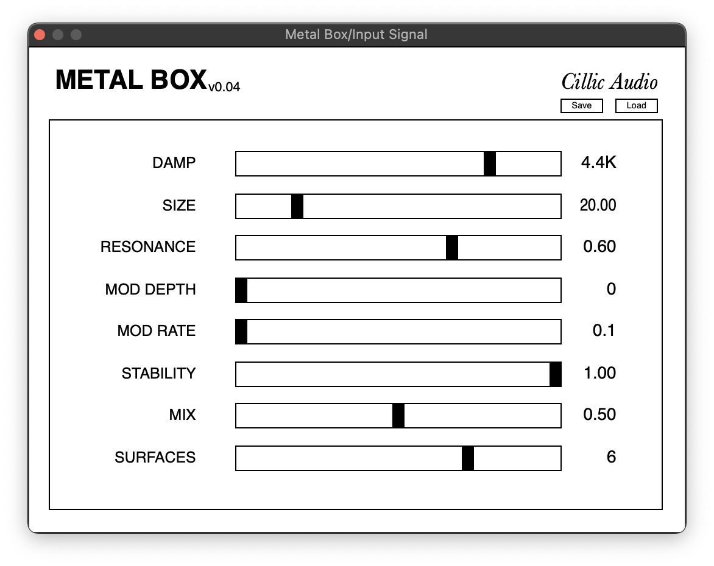
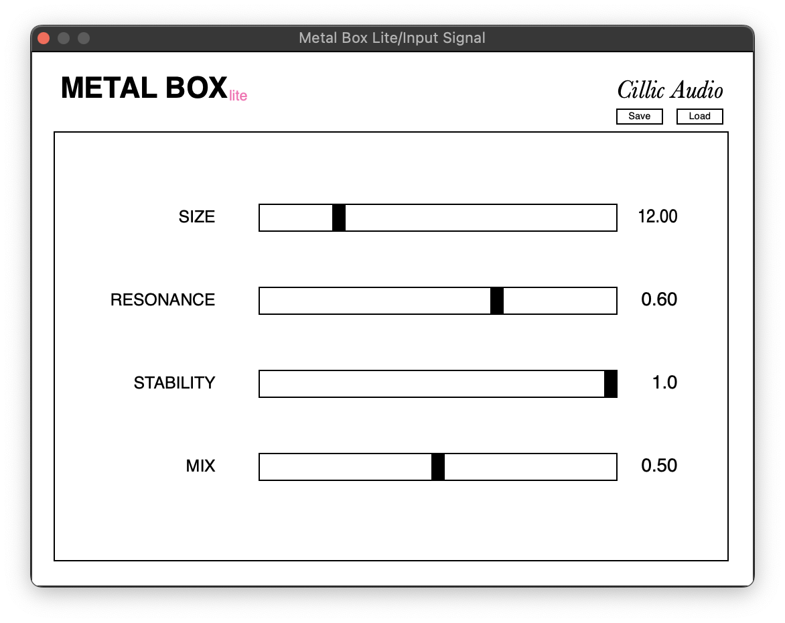

Cillic Audio
The de-facto homepage of Cillic Audio. Basement-built audio plugins from my hands to yours.
Metal Box
A modulated reverb and resonator specializing in compressed, metallic tones reminiscient of the electro-mechanical reverbs of yore. The patented stability parameter allows you to venture into worlds of resonant room tones and feedback.
Metal Box Lite
Metal Box's little brother. Contains all the essential controls for creating your very own surreal resonant spaces. Completely free of charge. No license required. Download will be re-added shortly. MacOS only for now. Windows version in development.
Note on installers
Our MacOS installers are unsigned and as such will pop-up a message when you try to run them. We've added direct downloads to the VST3 and AU files as well as instructions for bypassing this below.
How to bypass MacOS unsigned message
- Right-click (or Control+click) on the installer file
- Select "Open" from the context menu
- Click "Open" again in the security dialog that appears